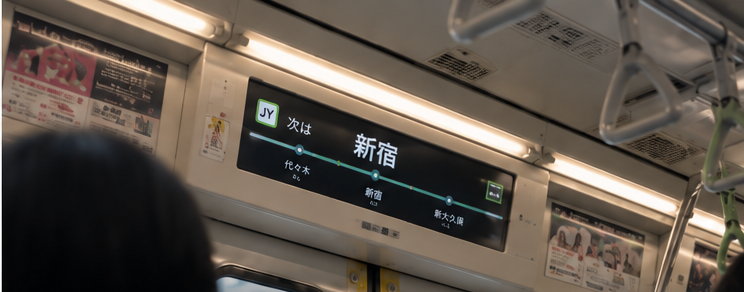

EKIKOKO LOCATION INSTRUMENT
エキココβ
席に座って掲示板が見えなくても、
いまどの駅かひと目でわかる。

正確な位置情報を運営者に送信・保存しません。
プライバシーポリシー
エキココ
最寄り駅
GPS取得中…現在地を確認しています。
端末の設定で、このサイトの位置情報を許可してください。
---
周辺の駅
乗車履歴
乗車履歴はまだありません。
広告スペース
表示と端末の設定
最寄り駅
---
どこで降りますか？
駅を選ぶと、到着前にお知らせします
現在地周辺の駅
地図を動かして駅をタップしてください
仮選択
改札の通り方
何で乗りますか？
QRをかざす
ICカードをタッチ
きっぷを入れて取る
有人改札で見せる
閉まったら精算機へ
会社が変わる乗り換え
プレミアム
- 降車アラート — 降りる駅が近づくと通知。寝過ごし防止に
- 次の駅予測 — 進行方向から次の駅を表示
- 路線絞り込み — 乗っている路線だけ表示
- 乗車履歴 — 通った駅を自動で記録
- 広告非表示
月額 240円 / 年額 1,800円（38%おトク）
まもなく